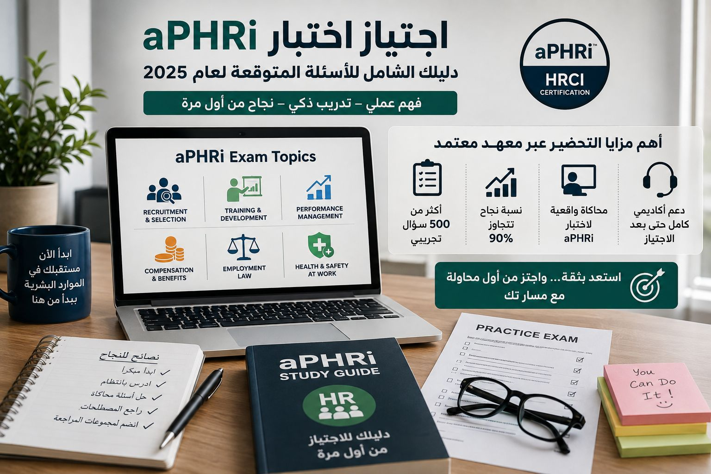

أهم أسئلة اختبار aPHRi 2026 مع الإجابات والتفسير | نماذج تدريبية

إذا كنت تستعد للحصول على شهادة aPHRi وتبحث عن أسئلة تساعدك على فهم طريقة الاختبار، فالأفضل ألا تعتمد على حفظ إجابات جاهزة، وإنما أن تتدرب على المفاهيم والموضوعات التي يشملها الاختبار رسميًا.
اختبار Associate Professional in Human Resources – International (aPHRi) من HRCI موجه أساسًا لمن يبدأون مسيرتهم المهنية في الموارد البشرية أو يريدون بناء أساس قوي في HR خارج الولايات المتحدة. ولا يشترط HRCI خبرة سابقة في الموارد البشرية للتقدم للشهادة، مع اشتراط شهادة الثانوية العامة أو ما يعادلها عالميًا.
في هذا الدليل ستجد نماذج أسئلة تدريبية لاختبار aPHRi 2026 مع الإجابات والتفسير، موزعة وفق المحاور الرسمية للاختبار، بالإضافة إلى أهم النصائح لتنظيم مذاكرتك.
ملاحظة: الأسئلة الموجودة في هذا المقال أسئلة تدريبية أعدت لأغراض المراجعة، وليست أسئلة مسرّبة أو أسئلة فعلية من اختبار HRCI.
إذا كنت تتعرف على الشهادة للمرة الأولى، ابدأ أولًا بدليل ما هي شهادة aPHRi ولماذا تناسب المبتدئين في الموارد البشرية؟.
ما هو اختبار aPHRi؟
اختبار aPHRi هو اختبار معرفي من HR Certification Institute – HRCI يقيس فهم المتقدم للمفاهيم الأساسية والعمليات اليومية في إدارة الموارد البشرية الدولية.
ووفق المعلومات المنشورة حاليًا من HRCI، فإن الاختبار يتكون من 65 سؤالًا محسوبًا في النتيجة بالإضافة إلى 25 سؤالًا تجريبيًا Pretest، ويستغرق وقت الاختبار نفسه ساعة و45 دقيقة، مع 30 دقيقة إضافية للإجراءات الإدارية. كما يمكن إجراؤه في مراكز Pearson VUE أو عن بُعد باستخدام OnVUE.
معلومات اختبار aPHRi 2026
| البند | التفاصيل الحالية |
|---|---|
| الجهة المانحة | HRCI |
| عدد الأسئلة المحتسبة | 65 سؤالًا |
| أسئلة Pretest | 25 سؤالًا غير محتسب |
| إجمالي الأسئلة | 90 سؤالًا |
| زمن الاختبار | ساعة و45 دقيقة |
| الوقت الإداري الإضافي | 30 دقيقة |
| اللغة | متاح باللغة العربية أيضًا |
| درجة النجاح | 500 على مقياس درجات من 100 إلى 700 |
| طريقة الاختبار | Pearson VUE أو OnVUE |
| الخبرة المطلوبة | لا يشترط وجود خبرة سابقة في HR |
| المؤهل | الثانوية العامة أو ما يعادلها |
| رسوم الطلب | 100 دولار |
| رسوم الاختبار | 300 دولار |
يعتمد HRCI على Scaled Score يتراوح من 100 إلى 700، وتُحدد درجة النجاح عند 500، ولذلك لا تعني درجة 500 أنك أجبت عن نسبة ثابتة محددة من الأسئلة بشكل صحيح.
وفق مخطط محتوى aPHRi المنشور من HRCI، يتوزع الاختبار على خمسة مجالات رئيسية.
| محور اختبار aPHRi | الوزن في الاختبار |
|---|---|
| HR Operations – عمليات الموارد البشرية | 33% |
| Recruitment and Selection – الاستقطاب والاختيار | 22% |
| Employee Relations, Health and Safety – علاقات الموظفين والصحة والسلامة | 20% |
| Compensation and Benefits – التعويضات والمزايا | 15% |
| Human Resource Development and Retention – تطوير الموارد البشرية والاحتفاظ بالموظفين | 10% |
ماذا يعني ذلك عند المذاكرة؟
لا تقسّم وقتك بالتساوي على جميع الفصول. محور HR Operations وحده يمثل ثلث الاختبار تقريبًا، بينما يمثل التدريب والتطوير والاحتفاظ بالموظفين 10% فقط. لذلك يجب أن تعكس خطة المراجعة هذه الأوزان بدلًا من دراسة كل موضوع بنفس المدة.
يمثل HR Operations نحو 33% من الاختبار، وهو أكبر محور في مخطط aPHRi الرسمي. ويشمل موضوعات مثل سياسات الموارد البشرية، السجلات، HRIS، مؤشرات الموارد البشرية، الهيكل التنظيمي، أوصاف الوظائف والخصوصية.
السؤال الأول: ما الهدف الأساسي من الوصف الوظيفي Job Description؟
أ) تحديد راتب الموظف فقط
ب) توضيح مهام ومسؤوليات ومتطلبات الوظيفة
ج) قياس رضا الموظفين
د) تحديد ميزانية إدارة الموارد البشرية
الإجابة الصحيحة: ب
الوصف الوظيفي يساعد المؤسسة على تحديد طبيعة الوظيفة ومسؤولياتها ومتطلباتها، كما يستخدم لاحقًا في الاستقطاب وإدارة الأداء والعديد من عمليات الموارد البشرية.
السؤال الثاني: ما وظيفة نظام HRIS؟
أ) إدارة الحملات التسويقية
ب) تخزين وتنظيم وإدارة بيانات الموارد البشرية
ج) إدارة المخزون
د) إدارة مبيعات الشركة
الإجابة الصحيحة: ب
Human Resources Information System – HRIS يستخدم لإدارة معلومات الموظفين والعمليات المرتبطة بالموارد البشرية، وهو أحد الموضوعات المدرجة ضمن HR Operations في مخطط HRCI.
السؤال الثالث: ما المقصود بمعدل دوران الموظفين Turnover Rate؟
أ) نسبة الموظفين الذين يغادرون المؤسسة خلال فترة محددة
ب) عدد الموظفين الجدد فقط
ج) متوسط رواتب الموظفين
د) عدد ساعات التدريب
الإجابة الصحيحة: أ
Turnover Rate أحد مؤشرات الموارد البشرية HR Metrics المستخدمة لفهم معدلات مغادرة الموظفين ومتابعة استقرار القوى العاملة.
السؤال الرابع: لماذا يجب حماية بيانات الموظفين؟
أ) لأنها معلومات يمكن نشرها داخليًا
ب) للمحافظة على الخصوصية والالتزام بالسياسات واللوائح ذات الصلة
ج) لتسهيل الإعلانات الوظيفية
د) لتقليل التدريب
الإجابة الصحيحة: ب
السرية والخصوصية في التعامل مع سجلات الموظفين وبيانات المؤسسة من المعارف التي يتناولها اختبار aPHRi ضمن عمليات الموارد البشرية.
السؤال الخامس: ماذا يوضح الهيكل التنظيمي Organizational Chart؟
أ) خطة الرواتب
ب) العلاقات وخطوط التقارير بين الوظائف والوحدات التنظيمية
ج) جدول الإجازات
د) نتائج التدريب
الإجابة الصحيحة: ب
فهم هياكل التقارير، مثل الهياكل المسطحة والمصفوفية والمخططات التنظيمية، جزء من نطاق HR Operations الرسمي.
يمثل الاستقطاب والاختيار 22% من محتوى الاختبار، ويشمل مصادر الاستقطاب والمقابلات وقواعد بيانات المتقدمين وعمليات ما قبل وبعد عرض العمل وتهيئة الموظف الجديد Onboarding.
السؤال السادس: ما الهدف الأساسي من الاستقطاب Recruitment؟
أ) زيادة عدد المقابلات
ب) جذب مجموعة مناسبة من المرشحين للوظيفة
ج) توظيف أول شخص يتقدم
د) تخفيض عدد الموظفين
الإجابة الصحيحة: ب
الاستقطاب الجيد يهدف إلى الوصول إلى مرشحين يتناسبون مع احتياجات الوظيفة والمؤسسة، وليس مجرد زيادة أعداد المتقدمين.
السؤال السابع: ما ميزة Structured Interview؟
أ) تغيير الأسئلة بالكامل مع كل مرشح
ب) استخدام إطار وأسئلة متسقة تساعد على مقارنة المرشحين
ج) إلغاء تقييم المرشح
د) الاعتماد على الانطباع الشخصي فقط
الإجابة الصحيحة: ب
المقابلات المنظمة Structured Interviews تساعد على جعل عملية التقييم أكثر اتساقًا بين المتقدمين.
السؤال الثامن: أي مما يلي يعتبر مصدرًا للاستقطاب؟
أ) منصات التوظيف
ب) إحالات الموظفين
ج) الموقع الإلكتروني للشركة
د) جميع ما سبق
الإجابة الصحيحة: د
يتضمن نطاق aPHRi عدة مصادر Recruitment Sources، ومنها الإحالات والمواقع الإلكترونية ووسائل التواصل وقنوات البحث عن المرشحين.
السؤال التاسع: ما الهدف الأساسي من Onboarding؟
أ) إنهاء علاقة الموظف بالمؤسسة
ب) مساعدة الموظف الجديد على الاندماج وفهم الوظيفة والثقافة والإجراءات
ج) تحديد راتب المدير
د) إجراء Exit Interview
الإجابة الصحيحة: ب
عملية Onboarding تأتي بعد التوظيف وتهدف إلى تسهيل بداية الموظف الجديد داخل المؤسسة.
يمثل محور التعويضات والمزايا 15% من الاختبار، ويغطي الأجور والحوافز والمزايا وبرامج المكافآت ومفاهيم Payroll والتوازن بين العمل والحياة.
السؤال العاشر: أي مما يلي مثال على التعويض المباشر؟
أ) الراتب الأساسي
ب) التأمين الصحي
ج) برنامج اللياقة البدنية
د) ساعات العمل المرنة
الإجابة الصحيحة: أ
الراتب والأجور والحوافز النقدية ترتبط بالتعويض المباشر، بينما يمكن أن تدخل العديد من المزايا الأخرى ضمن التعويضات غير المباشرة أو Total Rewards.
السؤال الحادي عشر: ما المقصود بـ Total Rewards؟
أ) الراتب فقط
ب) مجموعة العناصر المالية وغير المالية التي يحصل عليها الموظف مقابل عمله
ج) المكافآت السنوية فقط
د) التأمين الطبي فقط
الإجابة الصحيحة: ب
Total Rewards مفهوم أوسع من الراتب، ويشمل مجموعة من عناصر الأجر والمزايا والمكافآت والممارسات التي تقدمها المؤسسة للموظفين.
يمثل تطوير الموارد البشرية والاحتفاظ بالموظفين 10% من اختبار aPHRi، ويشمل طرق تقديم التدريب، تقييم التدريب، التطوير المهني، تقييم الأداء وإدارة الأداء.
السؤال الثاني عشر: لماذا يتم إجراء Training Needs Analysis؟
أ) لمعرفة فجوات المعرفة أو المهارات والأداء
ب) لتحديد راتب الموظف
ج) لإنهاء عقد الموظف
د) لكتابة الإعلان الوظيفي
الإجابة الصحيحة: أ
فهم الاحتياج الفعلي يساعد على توجيه التدريب نحو مشكلة أو فجوة محددة بدلًا من تقديم تدريب لا يرتبط باحتياجات العمل.
السؤال الثالث عشر: كيف يمكن تقييم فعالية التدريب؟
أ) بعدد المقاعد في قاعة التدريب
ب) باستخدام أدوات مثل التقييمات والاختبارات قبل وبعد التدريب
ج) من خلال مدة البرنامج فقط
د) من خلال تكلفة الدورة فقط
الإجابة الصحيحة: ب
يتناول مخطط HRCI عدة وسائل لتقييم التدريب، منها الاستبيانات والاختبارات قبل وبعد البرامج التدريبية.
يمثل محور علاقات الموظفين والصحة والسلامة 20% من اختبار aPHRi، ويغطي شكاوى الموظفين، الإجراءات التأديبية، إنهاء الخدمة، مخاطر مكان العمل، الصحة والسلامة والأمن.
السؤال الرابع عشر: ماذا يجب أن تفعل HR عند تلقي شكوى من موظف؟
أ) تجاهلها إذا كانت بسيطة
ب) التعامل معها وفق الإجراءات والسياسات المعتمدة وجمع المعلومات ذات الصلة
ج) نشر تفاصيلها على الموظفين
د) إصدار عقوبة فورًا دون مراجعة
الإجابة الصحيحة: ب
التحقيق في الشكاوى Grievances وجمع المعلومات ومعالجة النزاعات بطريقة منظمة من الموضوعات التي يشملها هذا المجال.
السؤال الخامس عشر: ما المقصود بـ Progressive Discipline؟
أ) تجاهل المخالفات
ب) اتباع إجراءات تصحيحية متدرجة وفق سياسة المؤسسة وطبيعة المخالفة
ج) فصل الموظف في جميع الحالات
د) تخفيض الراتب تلقائيًا
الإجابة الصحيحة: ب
Progressive Discipline يرتبط بتدرج الإجراءات التصحيحية وفق النظام والسياسة المعمول بها، وهو أحد المفاهيم الواردة ضمن نطاق الاختبار.
السؤال السادس عشر: ما الخطوة الأولى عند التعامل مع خطر في مكان العمل؟
أ) تجاهله
ب) التعرف على الخطر وتقييمه
ج) الانتظار حتى يقع حادث
د) تغيير رواتب الموظفين
الإجابة الصحيحة: ب
إدارة مخاطر مكان العمل تبدأ بفهم المخاطر وتحديدها، ثم اتخاذ إجراءات مناسبة لتقليل احتمالية الضرر وحماية الموظفين.
من الخطأ تصور أن اختبار HRCI مجرد مجموعة تعريفات للحفظ.
توضح HRCI أن اختباراتها يمكن أن تتضمن أكثر من شكل للأسئلة، مثل الاختيار من متعدد وبعض أنواع الأسئلة البديلة، وأن المطلوب عادة هو تحديد أفضل إجابة بين الاختيارات المتاحة. كما تستخدم أسئلة Pretest لتقييم جودة بعض الأسئلة قبل احتسابها مستقبلًا.
لذلك أثناء التدريب لا تسأل نفسك فقط:
«ما التعريف الصحيح؟»
بل اسأل أيضًا:
«إذا حدث هذا الموقف داخل إدارة الموارد البشرية، فما الإجراء الأنسب؟»
وهذه الطريقة أكثر فائدة من حفظ مئات الإجابات دون فهم.
أفضل خطة للتحضير لا تعتمد على عدد ثابت من الساعات يناسب الجميع، وإنما على مستواك الحالي والوقت المتاح حتى موعد الاختبار.
يمكن استخدام الخطة التالية:
| المرحلة | ما الذي تركز عليه؟ |
|---|---|
| البداية | فهم محاور HRCI الخمسة |
| المرحلة الثانية | دراسة المفاهيم والمصطلحات الأساسية |
| المرحلة الثالثة | حل أسئلة تدريبية لكل محور |
| المرحلة الرابعة | تحليل الأخطاء وتحديد نقاط الضعف |
| المرحلة الأخيرة | اختبارات محاكاة ومراجعة المصطلحات |
ومن الأفضل إعطاء الأولوية للمحاور الأعلى وزنًا، خصوصًا HR Operations بنسبة 33% وRecruitment and Selection بنسبة 22% وEmployee Relations, Health and Safety بنسبة 20%.
للمزيد يمكنك مراجعة دليل التحضير لشهادة aPHRi خطوة بخطوة.
نعم. تذكر HRCI حاليًا أن اختبار aPHRi متاح باللغة العربية، وهي نقطة مهمة لأن عددًا كبيرًا من المقالات القديمة ما زال يذكر أن الاختبار متاح باللغة الإنجليزية فقط.
ومع ذلك، من المفيد معرفة المصطلحات الإنجليزية الأساسية في الموارد البشرية، مثل:
| المصطلح | المعنى |
|---|---|
| Recruitment | الاستقطاب |
| Selection | الاختيار |
| Onboarding | تهيئة الموظف الجديد |
| Compensation | التعويضات |
| Benefits | المزايا |
| Performance Management | إدارة الأداء |
| Turnover Rate | معدل دوران الموظفين |
| HRIS | نظام معلومات الموارد البشرية |
| Employee Relations | علاقات الموظفين |
| Job Description | الوصف الوظيفي |
درجة النجاح في اختبارات HRCI هي 500 على مقياس درجات يتراوح بين 100 و700.
لكن من المهم فهم أن HRCI تستخدم Scaled Score؛ أي أن النتيجة ليست تحويلًا مباشرًا بسيطًا لعدد الإجابات الصحيحة إلى نسبة مئوية.
لذلك لا توجد قاعدة دقيقة من نوع:
«يجب أن تجيب عن X سؤال من أصل 90 حتى تنجح».
الأفضل هو محاولة رفع مستواك في المحاور الخمسة جميعًا بدل البحث عن الحد الأدنى لعدد الإجابات.
بحسب HRCI حاليًا، يحتوي الاختبار على:
65 سؤالًا محتسبًا + 25 سؤال Pretest = 90 سؤالًا.
والـ25 سؤالًا الإضافية تستخدم لأغراض الاختبار والتحقق من جودة الأسئلة ولا تدخل ضمن الدرجة النهائية.
وهذه المعلومة مهمة لأن بعض المصادر والمقالات القديمة على الإنترنت ما زالت تعرض أعدادًا مختلفة.
اختبار aPHRi مصمم للمستوى التأسيسي، ولا يشترط خبرة سابقة في مجال الموارد البشرية، لكنه يحتاج إلى فهم جيد للمفاهيم الأساسية والمصطلحات وطريقة تطبيقها في مواقف العمل.
وغالبًا تكون الصعوبة الحقيقية في:
- كثرة المصطلحات المتشابهة.
- فهم الفرق بين وظائف HR المختلفة.
- اختيار أفضل إجابة وليس مجرد إجابة تبدو صحيحة.
- إدارة الوقت أثناء الاختبار.
- ضعف أحد المحاور الأساسية مثل HR Operations أو Recruitment.
يمكن التحضير للاختبار ذاتيًا أو من خلال برنامج تدريبي؛ الاختيار يعتمد على خبرتك السابقة وقدرتك على تنظيم الدراسة.
إذا كنت تبدأ من الصفر أو تفضل الدراسة المنظمة مع مدرب ومراجعة المحاور بصورة متسلسلة، يمكنك الاطلاع على دورة aPHRi أونلاين وحضوري في الرياض من معهد مسارتك.
وتتضمن صفحة البرنامج الحالية تفاصيل مدة الدورة وطريقة الحضور والمحتوى التدريبي والأسعار المحدثة.
عملية التسجيل في اختبار HRCI منفصلة عن التسجيل في الدورة التدريبية.
بعد الاستعداد للاختبار يمكنك مراجعة شرح التسجيل في اختبار aPHRi عبر موقع HRCI خطوة بخطوة.
تنبيه مهم: المقال المرتبط نفسه يحتاج تحديثًا أيضًا، لأن نسخة Google الحالية منه ما زالت تعرض المعلومات القديمة الخاصة بـ95 سؤالًا وPrometric واللغة الإنجليزية فقط.
هل اختبار aPHRi متاح باللغة العربية؟
نعم، تعرض HRCI حاليًا اختبار aPHRi باعتباره متاحًا باللغة العربية أيضًا.
كم سؤالًا في اختبار aPHRi؟
الاختبار يحتوي على 65 سؤالًا محتسبًا و25 سؤال Pretest، أي 90 سؤالًا إجمالًا.
كم مدة اختبار aPHRi؟
مدة الاختبار ساعة و45 دقيقة، بالإضافة إلى 30 دقيقة للإجراءات الإدارية.
كم درجة النجاح في اختبار aPHRi؟
درجة النجاح 500 على مقياس يتراوح من 100 إلى 700.
هل شهادة aPHRi تحتاج إلى خبرة؟
لا يشترط HRCI خبرة سابقة في الموارد البشرية للتقدم لشهادة aPHRi، ولكن يشترط شهادة الثانوية العامة أو ما يعادلها.
أين يمكن إجراء اختبار aPHRi؟
يمكن إجراء الاختبار في مركز Pearson VUE أو عن بُعد من المنزل أو المكتب من خلال OnVUE، وفق متطلبات وسياسات الاختبار.
ما أهم جزء في اختبار aPHRi؟
أكبر محور من حيث الوزن هو HR Operations بنسبة 33%، يليه Recruitment and Selection بنسبة 22%، ثم Employee Relations, Health and Safety بنسبة 20%.
الاستعداد لاختبار aPHRi في 2026 لا يعتمد على جمع أكبر عدد ممكن من الأسئلة المحفوظة، بل على فهم المجالات الخمسة التي يحددها HRCI ومعرفة كيفية تطبيق المفاهيم الأساسية للموارد البشرية.
ابدأ بالمحاور الأعلى وزنًا، تدرب على أسئلة متنوعة، وراجع أسباب الإجابات الصحيحة والخاطئة بدل الاكتفاء بحفظ الاختيار الصحيح.
وإذا كنت تريد خطة تدريب منظمة، يمكنك الاطلاع على دورة aPHRi أونلاين وحضوري من معهد مسارتك والتعرف على مواعيد البرنامج وطريقة التدريب الحالية.
دورات ذات صلة
دورة تحليل بيانات الموارد البشرية HR Data Analysis – احتراف قراءة مؤشرات الموارد البشرية
المدة: 5 Days
أقرب موعد: سيتم تحديده قريبًا
دورة PHRi في الرياض | التحضير لشهادة محترف الموارد البشرية الدولية
المدة: 14 Days
أقرب موعد: الجمعة 04-12-2026
دورة CIPD للموارد البشرية | تدريب احترافي في People Practice وPeople Management أونلاين وحضوري بالري
المدة: 5 Days
أقرب موعد: سيتم تحديده قريبًا
دورة aPHRi في الرياض | تأهيل لشهادة HRCI أونلاين وحضوريًا
المدة: 14 Days
أقرب موعد: الأحد 29-11-2026
دورة PRINCE2 Agile Foundation – التأسيس العملي لإدارة المشاريع الرشيقة مع معهد مسارتك
المدة: 5 Days
أقرب موعد: سيتم تحديده قريبًا
دورة SHRM للموارد البشرية | تأهيل لشهادة SHRM-CP أونلاين وحضوري بالرياض
المدة: 21 Days
أقرب موعد: الأحد 06-12-2026
دورة GRCP أونلاين – الحوكمة وإدارة المخاطر والامتثال من معهد مسارتك
المدة: 5 Days
أقرب موعد: سيتم تحديده قريبًا
عرض تفاصيل البرنامج
دورة ممارس إدارة المواهب المعتمد (TMP™ - Talent Management Practitioner)
المدة: 5 Days
أقرب موعد: سيتم تحديده قريبًا